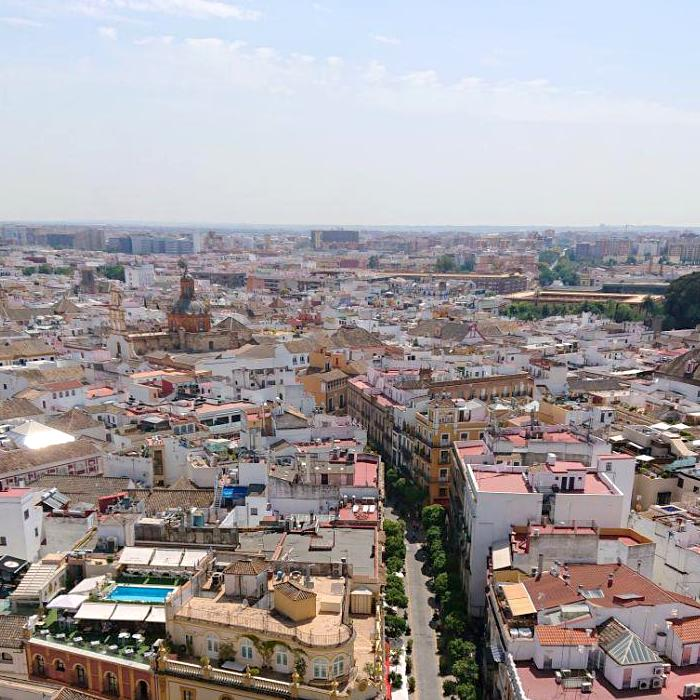
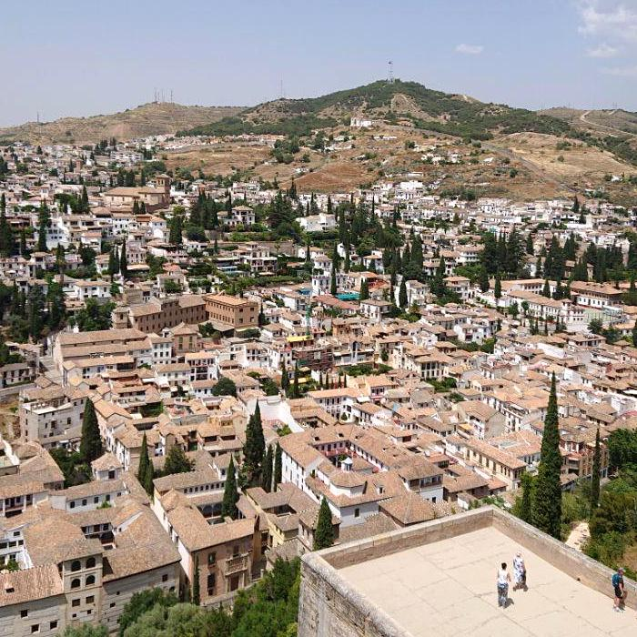
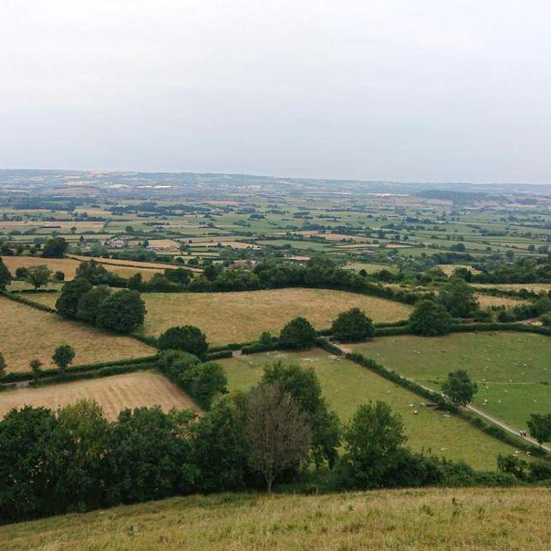
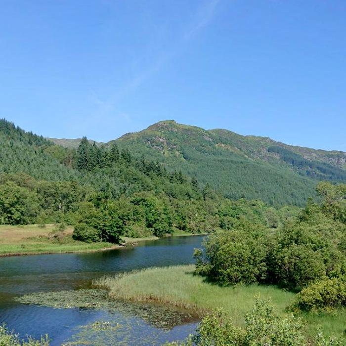

Spain
Seville
Was on top of the bell tower when I took this photo. I love elevated towers. The tower was about 35 storeys high.

Spain
Granada
It was a wonder. The World UNESCO Heritage site, Alhambra. The biggest thing in the city and what almost 100% of the tourists are there to visit.

London
Glastonbury
We hiked up the Glastonbury Tor. It was a cloudy and windy day. Thankfully, it was also a short walk up. You could see a palette of green fields from up there. Breathtaking.

Scotland
The Highlands
The Highlands are really pretty and meant to be devoured slowly.